図解：ポン・タヴェン派／ナビ派
ポン・タヴェン派からナビ派へ
- 1886

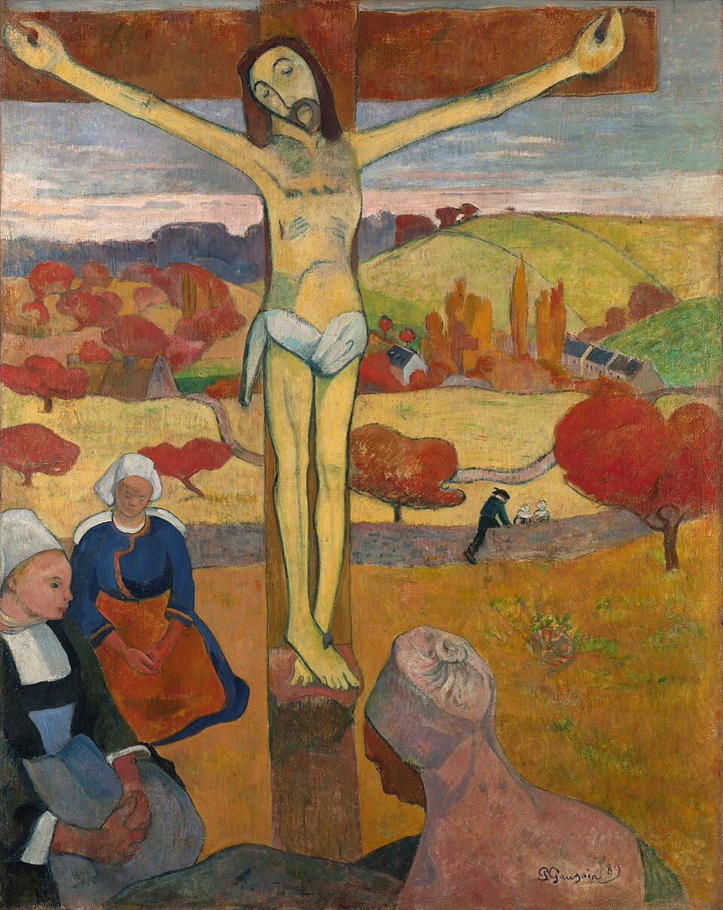
ゴーギャン、ポン・タヴェンへ印象派展に参加しつつ反発
画家の集まる村で着想 - 1888
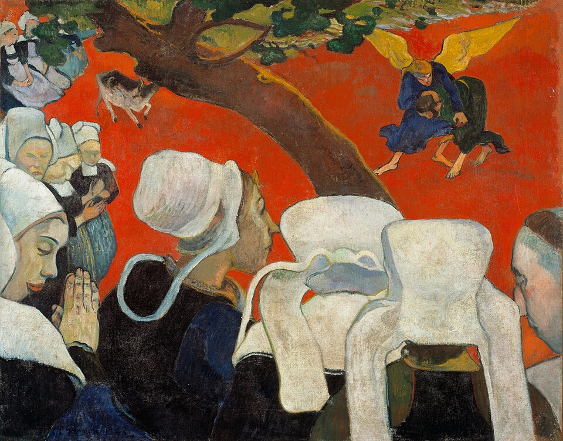
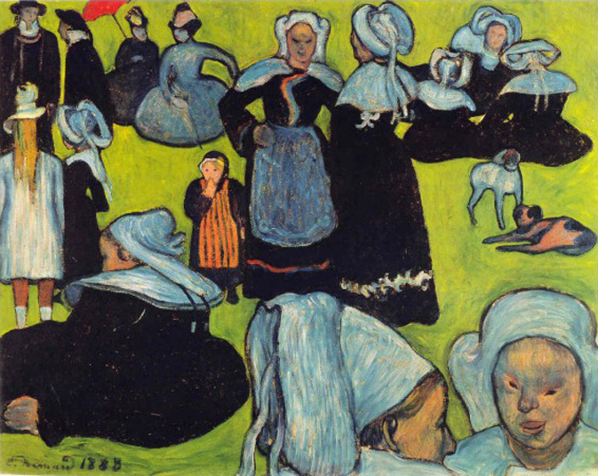
ポン・タヴェン派の総合主義ベルナール、ラヴァルらと
輪郭線を区切るクロワゾニスム - 1888
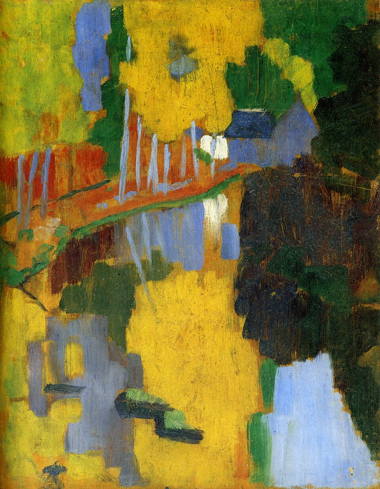
セリュジエの《タリスマン》ゴーギャンの助言で描く
見た色より心象に従う - 1890年代
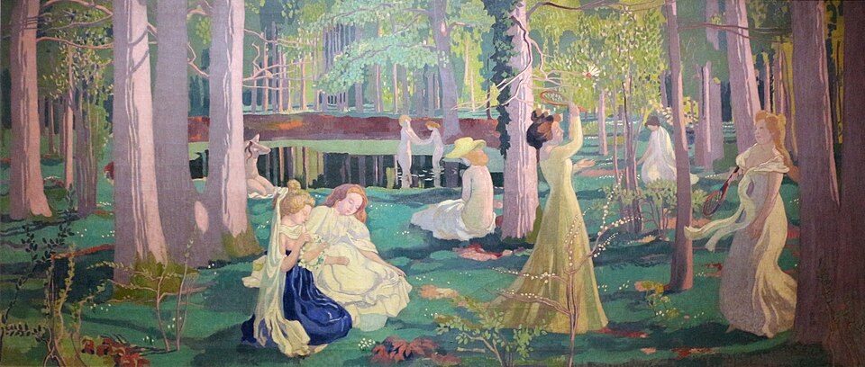
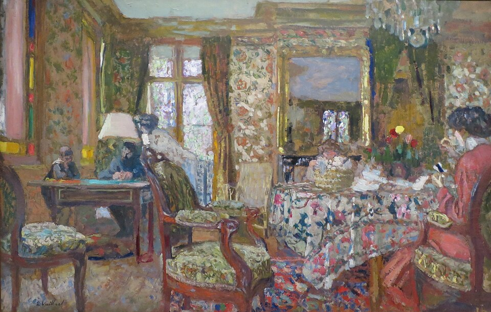
ナビ派の展開ドニ：色彩に覆われた平面
親密派は日常を描く
印象派と何が違うか
図版の出典
- 《黄色いキリストのある自画像》ポール・ゴーギャン、1890～1891年、オルセー美術館：出典（Public domain）
- 《黄色いキリスト》ポール・ゴーギャン：出典（Public domain（PD-Art／PDM））
- 《説教の後の幻影（ヤコブと天使の闘い）》ポール・ゴーギャン：出典（Public domain（PD-Art／PDM））
- 《草地のブルターニュの女たち（ポン＝タヴェンのパルドン）》エミール・ベルナール：出典（Public domain（PD-Art／PDM））
- 《タリスマン（愛の森のアヴェン川）》ポール・セリュジエ：出典（Public domain（PD-Art／PDM））
- 《芝生の上のラケットゲーム（Jeu de volant）》モーリス・ドニ：出典（CC BY 3.0）
- 《室内（Intérieur）》エドゥアール・ヴュイヤール：出典（Public domain（PD-Art／PDM））
重要人物
ポン・タヴェン派
- ポール・ゴーギャン画家若い画家たちの助言者。総合主義の創始者を名乗る
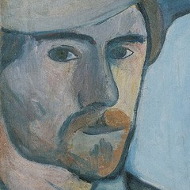
エミール・ベルナール画家《草地のブルターニュの女たち》。自分こそ創始者と反論- シャルル・ラヴァル画家ゴーギャンと意気投合し、総合主義を生み出す
ナビ派
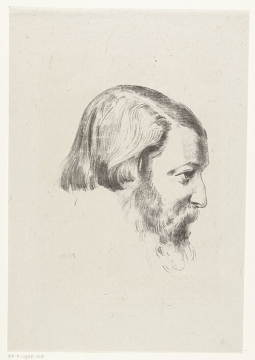
ポール・セリュジエ画家ゴーギャンの指導で《タリスマン》を描き、パリへ伝える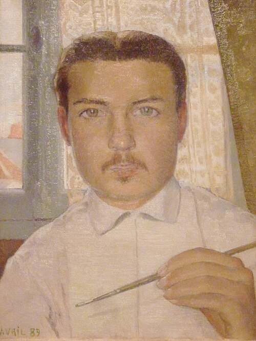
モーリス・ドニ画家絵画は色彩に覆われた平坦な表面だと説く- ポール・ランソン画家平面性を追求し、装飾の仕事も多く手掛ける
- ピエール・ボナール画家親密派を称し、現実に生きる人々の暮らしを描く
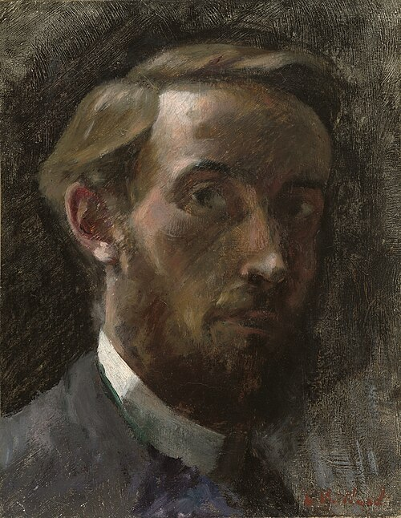
エドゥアール・ヴュイヤール画家親密派。ボナールとともにドレフュスを支持
周りの人々
 カミーユ・ピサロ画家ゴーギャンに絵を教える。新印象主義への侮蔑に怒る
カミーユ・ピサロ画家ゴーギャンに絵を教える。新印象主義への侮蔑に怒る- ロドルフ・ジュリアン画家・学校創設者1867年、私立芸術学校アカデミー・ジュリアンを設立
- ドレフュス陸軍大尉1894年に不当逮捕。事件の対立がナビ派にも及ぶ
肖像・図版の出典
ゴーギャンと二つの集団
ゴーギャンから二つの集団へ
動画 1:49～1880年代後半、ポール・ゴーギャンに影響を受けた若い芸術家たちが、伝統に反発して新たな創造を目指しました。それがポン・タヴェン派とナビ派です。ポスト印象主義の三大巨匠の一人とされるゴーギャンは、印象派展に参加しながら、次第に印象主義へも反発しました。晩年には南太平洋のフランス領タヒチに滞在し、反印象派にとどまらず、反西洋的な絵画を制作します。
伝統にも新興の印象派にも批判的だったため、当時の美術界で孤立し、逃れるようにパリを離れました。最後の印象派展で登場した新印象主義の技法を公然と侮蔑したことは、絵を教えてくれたカミーユ・ピサロの怒りも買いました。しかし1888年、フランス北西部のポン・タヴェンで、エミール・ベルナールやシャルル・ラヴァルらと出会います。
ゴーギャン、ベルナール、ラヴァルらを中心とする集団がポン・タヴェン派です。パリ郊外のバルビゾン村に集まった画家をバルビゾン派と呼ぶのと同じく、土地の名を冠しています。ゴーギャンがタヒチへ去ると自然消滅しますが、その前に教えを受けたポール・セリュジエが、その教えをパリへ持ち帰りました。セリュジエとモーリス・ドニを中心に、画塾の仲間が結成したナビ派は、19世紀末と20世紀初頭の芸術運動を結ぶ役割を果たします。
ポン・タヴェン派と総合主義
ポン・タヴェンという場所
動画 3:42～ゴーギャンが初めてポン・タヴェンを訪れたのは、第八回にして最後の印象派展が開かれた1886年です。フランス北西部のこの村は、以前から画家の集まる保養地でした。素朴な街並みは、パリの喧騒を離れて着想を得る場となります。《黄色いキリスト》も、この土地のトレマロ礼拝堂にあるキリスト像に由来します。

《黄色いキリスト》
- 作者
- ポール・ゴーギャン
- 制作時期
- 1889年
- 所在地・所蔵
- バッファローAKG美術館（1946:4）
- 素材・形式
- 絵画
出典・画像について

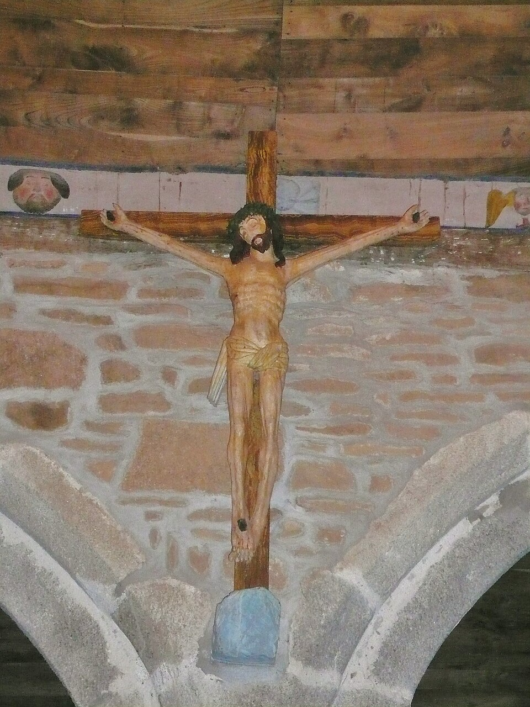
画像を拡大 ＋《トレマロ礼拝堂の磔刑のキリスト像》
- 作者
- 作者不詳
- 制作時期
- 17世紀
- 所在地・所蔵
- ノートルダム・ド・トレマロ礼拝堂、ポン＝タヴェン
- 素材・形式
- 木彫
出典・画像について
若い世代と総合主義
動画 4:11～ベルナールやラヴァルの世代には、伝統的なアカデミスムの影響力は既に弱く、印象主義への強い思い入れもありませんでした。印象派が台頭した1870年代にはまだ子どもで、目新しく感じられなかったのでしょう。二人もアカデミックな指導を受けていましたが、ゴーギャンと意気投合し、伝統表現と印象主義に対抗する総合主義を生み出しました。
自然・感情・造形の総合
動画 4:43～総合主義はフランス語サンテティスムの訳語で、語源のサンテーズには合成という意味があります。総合するのは、自然の形の外観、主題に対する芸術家の感情、そして線・色・形についての純粋に美的な考察の三つです。これを理解するには、彼らが反発した印象派との違いを見ると分かりやすいでしょう。
印象派との違い
動画 5:10～印象派は戸外制作を重視し、華やかになるパリや現代人の暮らし、その場の空気を即興的な筆触で描きました。そのため輪郭は曖昧になります。また、戸外の光の明るさや色の鮮やかさを表すため、色を分割しました。絵具は混ぜるほど暗くなるので、筆触を分け、離れて見たときの視覚混合によって一つの色に見えるようにしたのです。

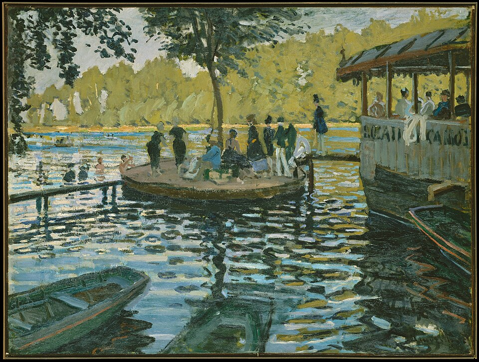
画像を拡大 ＋《ラ・グルヌイエール》
- 作者
- クロード・モネ
- 制作時期
- 1869年
- 所在地・所蔵
- メトロポリタン美術館（29.100.112）
- 素材・形式
- 絵画
出典・画像について
現実と幻想が同居する《説教の後の幻影》
動画 5:54～総合主義は、見たものをそのまま再現しようとはしません。《説教の後の幻影》の真っ赤な背景は、現実そのものとは異なります。一方、コワフと呼ばれる被り物の女性たちは、実際にポン・タヴェンに暮らす人々です。奥で戦う二人はヤコブと天使で、女性たちが神父から『創世記』第三十二章の説教を聞き、その内容を集団で幻視している様子が描かれています。現実と幻想が、一つの絵に共存しているのです。
輪郭線を明確にし、対象と周囲を区別する描き方も特徴です。色を分割せず、単色を力強く塗り、背景の赤にはゴーギャンの主観が反映されています。見たものから画家の想像力で主題を構成し、自然という客観と芸術家の主観を合成します。線・色・形のどれか一つを優位にせず、すべてをはっきり示すことで、それぞれの美的な要素も総合しようとしました。

《説教の後の幻影（ヤコブと天使の闘い）》
- 作者
- ポール・ゴーギャン
- 制作時期
- 1888年
- 所在地・所蔵
- スコットランド国立美術館、エディンバラ（NG1643）
- 素材・形式
- 絵画
出典・画像について
輪郭を区切るクロワゾニスム
動画 7:10～総合主義で重要となる、輪郭線をくっきり描く手法がクロワゾニスムです。名称は、金属の下地に枠を設け、その中へエナメルを流すクロワゾネという工芸技法に由来します。金属の枠で区画する部分が、絵画で輪郭を明確にする手法に重ねられました。
1888年の作品と展覧会
動画 7:32～1888年、ベルナールは《草地のブルターニュの女たち》を、ゴーギャンは《説教の後の幻影》を、ラヴァルは《市場への道》を、クロワゾニスムを用いて制作しました。この年の作品によって、総合主義が生まれたといえます。翌1889年には「印象主義および総合主義グループ展」を開催しました。「印象主義」は宣伝のための名称で、実際には印象主義的な作品は展示されなかったようです。しかし展覧会はマスコミに無視され、大失敗に終わりました。

《草地のブルターニュの女たち（ポン＝タヴェンのパルドン）》
- 作者
- エミール・ベルナール
- 制作時期
- 1888年8月
- 所在地・所蔵
- オルセー美術館（RF MO P2019 1）
- 素材・形式
- 絵画
出典・画像について

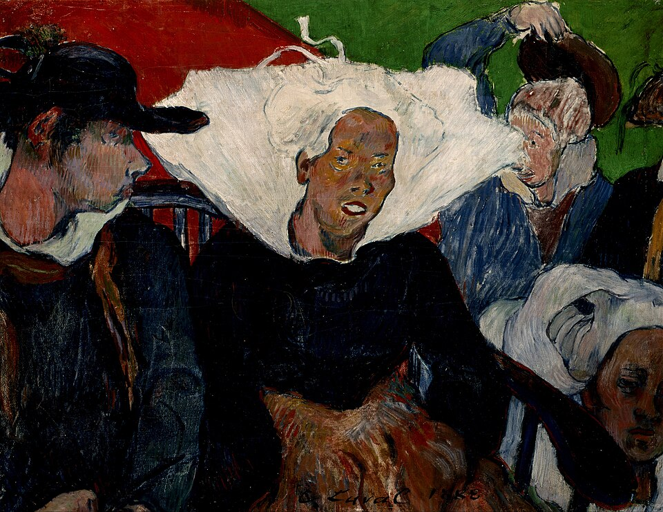
画像を拡大 ＋《市場への道すがら、ブルターニュ》
- 作者
- シャルル・ラヴァル
- 制作時期
- 1888年
- 所在地・所蔵
- インディアナポリス美術館（Newfields、1998.178）
- 素材・形式
- 絵画
出典・画像について
創始者をめぐる対立
動画 8:25～活動を続けたポン・タヴェン派にとって、1891年のゴーギャンとベルナールの絶交は転機となりました。総合主義とクロワゾニスムの創始者を名乗るゴーギャンに、ベルナールが自分こそ創始者だと反論したのです。真相は明らかではありませんが、《説教の後の幻影》は、ベルナールが見せた《草地のブルターニュの女たち》をもとに描かれたとされます。その経緯から、ベルナールはゴーギャンの主張に異議を唱えました。
一方、ゴーギャンの行動力なしには大きな運動に発展しなかった側面もあります。同年ゴーギャンはタヒチへ渡り、ベルナールは彼を否定する告発記事を書きました。ゴーギャンの離脱もあって集団は自然に解散します。しかし対立以前に教えを受けたセリュジエは、既に自分の画塾で別の運動、ナビ派を展開していました。
ナビ派
自由な進路を認めたアカデミー・ジュリアン
動画 9:30～セリュジエが初めてポン・タヴェンを訪れた1888年、彼はアカデミー・ジュリアンの学生でした。この私立芸術学校は、画家ロドルフ・ジュリアンが1867年に設立しました。初めは名門エコール・デ・ボザールへの入学を後押しする予備校のような立場でしたが、次第に入学の難しい女性や外国人の受け皿として独自の道へ進みます。
若い芸術家を特定の様式に導くのではなく、それぞれの信条に沿う芸術を認めました。伝統的なアカデミーへ進むことも、反アカデミスムへ進むことも受け入れたのです。その学生セリュジエはポン・タヴェンでゴーギャンと出会い、指導のもとで《愛の森の風景》、後の《タリスマン》を制作しました。
《タリスマン》に込められた教え
動画 10:25～アヴェン川の流れる風景を、ゴーギャンの助言を受けて描いた作品です。後に所有者となったモーリス・ドニは、1903年の雑誌『ロクシダン』の特集記事で、その指導の逸話を伝えました。木を緑と感じるならパレットで最も美しい緑を、影を青と感じるなら恐れずできる限りの青を使うよう促したといいます。見えた色をそのまま写すのではなく、自らの心象に従うよう説いたのです。

《タリスマン（愛の森のアヴェン川）》
- 作者
- ポール・セリュジエ
- 制作時期
- 1888年
- 所在地・所蔵
- オルセー美術館（RF1985 13）
- 素材・形式
- 絵画
出典・画像について
予言者という名のナビ派
動画 10:58～こうして生まれた抽象的で従来とは大きく異なる風景画に、セリュジエは感動しました。パリに戻り、アカデミー・ジュリアンの仲間であるモーリス・ドニ、ピエール・ボナール、エドゥアール・ヴュイヤール、ポール・ランソンらに見せると、彼らもこの方向で新たな絵画を目指そうとしました。これがナビ派の結成です。
ナビはヘブライ語で予言者を意味します。助言者ゴーギャンを神のように崇め、その教えを広める自分たちを予言者になぞらえたのです。作品名も《愛の森の風景》から《タリスマン》へ改められました。タリスマンとは護符であり、ゴーギャンの教えが詰まったお守りとして扱われました。
絵画は色彩で覆われた平面である
動画 11:54～1890年、まだ二十歳に満たなかったドニは、ナビ派の方向を示す言葉を残しました。絵画は軍馬や裸婦、何らかの逸話を表す以前に、一定の秩序で配された色彩に覆われた平坦な表面である、という考えです。軍馬は歴史画、裸婦は神話画を表します。
従来の絵画は物語を画面に再現することを重視し、そのために科学や解剖学の理論教育が行われ、遠近法や立体的な人体表現が追求されました。これに対してドニは、いくら立体的に描いても、そもそも絵は平面であると考えたのです。その作品では、遠近感の乏しい平面性が前面に現れています。

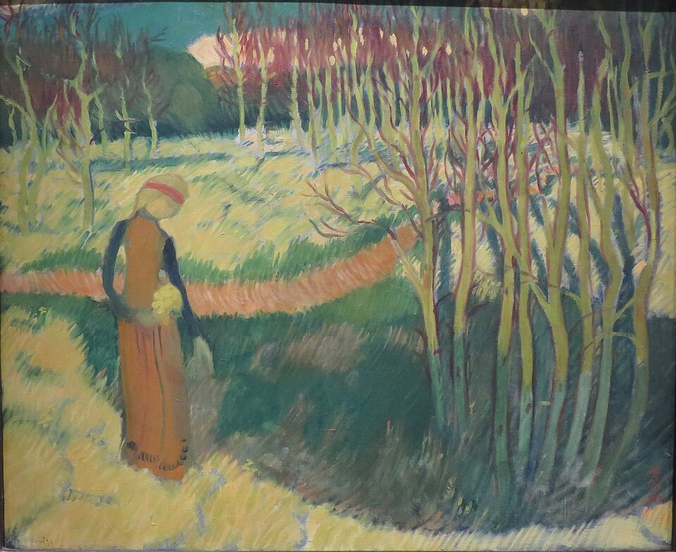
画像を拡大 ＋《ロマネスクのモチーフ（Motif Romanesque）》
- 作者
- モーリス・ドニ
- 制作時期
- 1890年
- 所在地・所蔵
- ロサンゼルス・カウンティ美術館（LACMA、AC1995.91.1）
- 素材・形式
- 絵画
出典・画像について
《ミューズ》（1893年）とは別作品。
画像出典：Maurice Denis
Public domain（PD-Art／PDM）
作品情報：作品・画像・利用条件
制作メモ
動画の《ロマネスクのモチーフ》（1890年）に一致。
日本美術と装飾への広がり
動画 12:47～ナビ派はゴーギャンの教えに固執せず、さまざまな要素を取り入れました。その一つが日本美術です。立体感に乏しい浮世絵の表現も、彼らの理念によく合いました。平面性を追求するドニやランソンは独創的な絵画を制作し、この様式と相性のよい本の挿絵やステンドグラスなど、装飾の仕事も多く手掛けました。

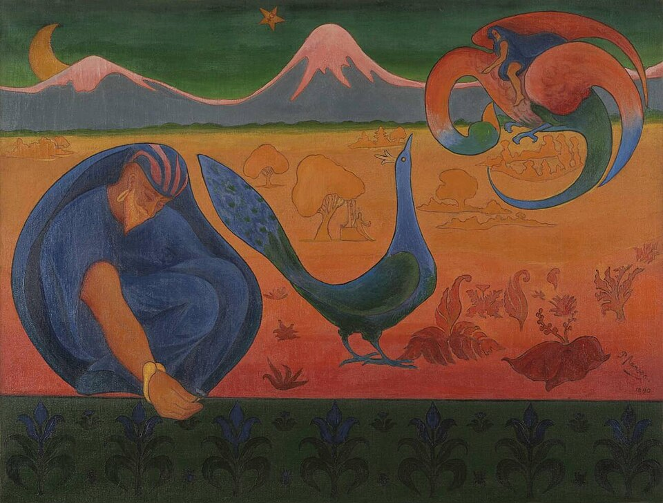
画像を拡大 ＋《ナビの風景（Le Paysage nabique／Le Nabi）》
- 作者
- ポール・ランソン
- 制作時期
- 1890年
- 所在地・所蔵
- 個人蔵
- 素材・形式
- 絵画
出典・画像について
担当2が動画800秒実見。Denys Cochin邸Le Chemin de la vieを公式美術館資料で候補確認したが1895年305×100cm作品と図柄一致を確定できず写真条件も未確認。候補名・年・所蔵は転記せず画像掲載保留。
《個人邸宅のステンドグラス（作品名未確定）》
- 作者
- モーリス・ドニ（動画表記）
- 制作時期
- 1896年（動画表記、未確認）
- 所在地・所蔵
- 未確定
- 素材・形式
- ステンドグラス
出典・画像について
日常生活を描く親密派
動画 13:23～空想的な作品を制作したドニやランソンに対し、ボナールとヴュイヤールは日常を描きました。自らをアンティミスト、親密派と称し、現実に生きる人々の暮らしを主題とします。自然と幻想を交ぜ、自然から抽象を引き出すゴーギャンとは主題が違っても、見たままに写すのではなく、平面的に描く方法を受け継いだのです。

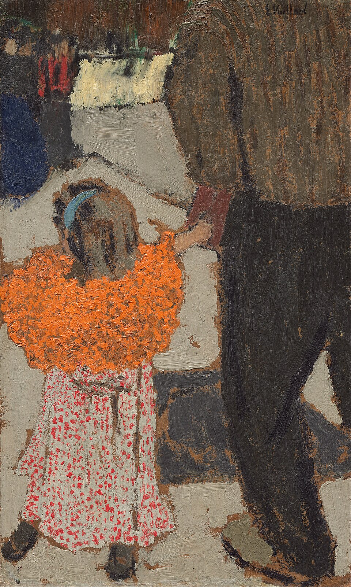
画像を拡大 ＋《赤いスカーフの子供》
- 作者
- エドゥアール・ヴュイヤール
- 制作時期
- 1891年頃
- 所在地・所蔵
- ナショナル・ギャラリー・オブ・アート、ワシントン（1970.17.90）
- 素材・形式
- 絵画
出典・画像について
印象派にも通じる日常の主題を、ゴーギャンたちに学んだ方法で表現したといえるでしょう。日本美術の要素も取り入れ、屏風の中にパリのおしゃれな人々を描く作品も生まれました。西洋風の見返り美人図を思わせる表現も見られます。

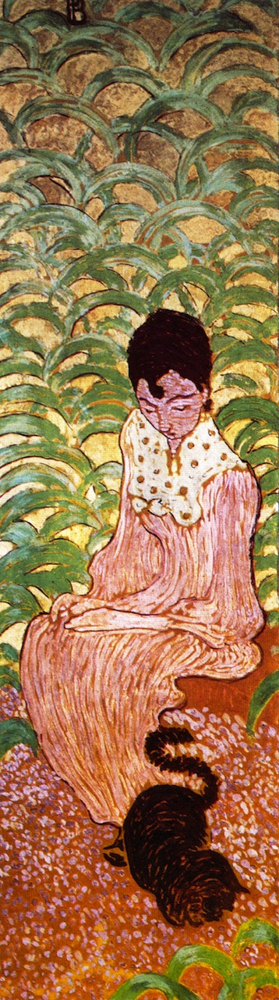
画像を拡大 ＋《庭の女性たち：猫と座る女性（四面のうち一面）》
- 作者
- ピエール・ボナール
- 制作時期
- 1891年
- 所在地・所蔵
- オルセー美術館
- 素材・形式
- 屏風
出典・画像について
四曲屏風のうち、左から二面目の「猫と座る女性」のパネル（部分）を掲載。全四面の画像ではありません。
画像出典：Pierre Bonnard
Public domain（PD-Art／PDM）
作品情報：作品・画像・利用条件
ナビ派の終わりとその後
集団の終焉とドレフュス事件
動画 14:16～ナビ派は1900年に運動としての終わりを迎えます。もともと主題は統一されておらず、ボナールやヴュイヤールが親密派を自称するように、個別の活動が増えるにつれて独自の道へ進みました。さらに大きかったのが、当時のフランスで物議を醸したドレフュス事件です。
政治的対立が及ぼした影響
動画 14:43～ユダヤ人のフランス陸軍大尉ドレフュスは、1894年、ドイツへ機密文書を流そうとした疑いで、証拠不十分にもかかわらず不当に逮捕されました。当時の反ユダヤ主義も重なり、禁錮刑を言い渡されます。1906年には無罪となりましたが、その間、世論はドレフュス支持と政府支持に二分され、民族をめぐる問題も対立を深めました。
その対立はナビ派にも及びました。セリュジエとドニは政府を、ボナールとヴュイヤールはドレフュスを支持します。それまで政治的な思想をあまり持たなかった画家たちの間にも対立が生じ、分かれてしまいました。
受け継がれた方向性
動画 15:29～集団が解消しても、各画家の主題は大きく変わりませんでした。熱心なキリスト教信者だったドニは、さらに空想的で神秘的な作品を制作し、ボナールとヴュイヤールは引き続き人々の日常を描きました。集団としてのナビ派は消えても、その方向性は引き継がれたのです。

《芝生の上のラケットゲーム（Jeu de volant）》
- 作者
- モーリス・ドニ
- 制作時期
- 1900年
- 所在地・所蔵
- オルセー美術館（RF1982 61）
- 素材・形式
- 絵画
出典・画像について
撮影：Sailko。
画像出典：Sailko（写真）／モーリス・ドニ（作品）
CC BY 3.0
作品情報：作品・画像・利用条件
制作メモ
Commons上で既に額周辺がトリミングされた写真。
画像の加工：Commons既存トリミング、追加加工なし

《室内（Intérieur）》
- 作者
- エドゥアール・ヴュイヤール
- 制作時期
- 1904年
- 所在地・所蔵
- プーシキン美術館、モスクワ（Ж-3366）
- 素材・形式
- 絵画
出典・画像について
20世紀の前衛芸術へ
動画 15:52～1890年代から1900年代に前衛とされた彼らも、やがて新たな前衛芸術の波に押されることとなります。20世紀初頭にはナビ派に代わり、フォーヴィスムが登場しました。ナビ派を含むポスト印象主義の系譜を受け継ぎ、その後めまぐるしく変化する20世紀の芸術の幕開けとなります。
要点まとめ
- 1880年代後半、ゴーギャンに影響を受けた若い芸術家たちが、ポン・タヴェン派とナビ派を生んだ。ゴーギャンは伝統にも印象派にも批判的で、1888年にフランス北西部のポン・タヴェンでベルナールやラヴァルと出会った。
- ポン・タヴェン派はゴーギャン、ベルナール、ラヴァルらの集団で、土地の名を冠している。伝統表現と印象主義に対抗する総合主義を生み出した。
- 総合主義（サンテティスム）は、自然の形の外観、主題に対する芸術家の感情、線・色・形の美的な考察の三つを総合する。《説教の後の幻影》では現実の女性たちと幻視が共存し、真っ赤な背景に画家の主観が表れている。
- 輪郭線をくっきり描くクロワゾニスムは、工芸技法クロワゾネに由来する。1888年の《草地のブルターニュの女たち》（ベルナール）、《説教の後の幻影》、《市場への道》（ラヴァル）で総合主義が生まれた。
- 1891年、総合主義の創始者をめぐってゴーギャンとベルナールが絶交し、ゴーギャンのタヒチ行きで集団は自然に解散した。
- アカデミー・ジュリアンの学生セリュジエは、ゴーギャンの助言で《タリスマン》を描き、パリの仲間ドニ、ボナール、ヴュイヤール、ランソンらとナビ派を結成した。ナビはヘブライ語で予言者を意味する。
- ドニは「絵画は一定の秩序で配された色彩に覆われた平坦な表面である」という考えを示した。ナビ派は浮世絵などの日本美術も取り入れ、挿絵やステンドグラスなど装飾の仕事も手がけた。
- ボナールとヴュイヤールはアンティミスト（親密派）と称し、日常を平面的に描いた。
- ナビ派は1900年に運動としての終わりを迎え、ドレフュス事件をめぐる政治的対立も画家を分けた。20世紀初頭にはフォーヴィスムが登場した。
確認問題
答えを考えてから開いてください。選択問題は選ぶとすぐ正誤と解説が出ます（選択肢の順番は開くたびに変わります）。各問題のリンクから該当の章や作品カードへ戻れます。
選択問題：0／5問回答・正解0
A. 一問一答答えを考えてから開く
問1金属の枠の中へエナメルを流す工芸技法に名前が由来する、輪郭線をくっきり描く手法を何と呼ぶか。
答えを見る
問2ナビ派の「ナビ」はヘブライ語で何を意味するか。
答えを見る
問3自らをアンティミスト（親密派）と称し、人々の日常を主題としたナビ派の画家二人は誰か。
答えを見る
B. 4択選ぶとすぐ正誤と解説
問4総合主義が総合しようとしたものに含まれないのはどれか。
→ 本文で確認（自然・感情・造形の総合）
問51890年、絵画は何かを表す以前に「一定の秩序で配された色彩に覆われた平坦な表面である」と述べた画家は誰か。
→ 本文で確認（絵画は色彩で覆われた平面である）
問61891年にゴーギャンと絶交し、総合主義とクロワゾニスムの創始者は自分だと反論した画家は誰か。
→ 本文で確認（創始者をめぐる対立）
C. 図版問題画像を見て答える
問7この作品の名前と作者を答えよ。
答えを見る
1888年、オルセー美術館。ゴーギャンの助言を受けて描き、もとの題は《愛の森の風景》。見えた色をそのまま写すのでなく、心象に従う教えが詰まった「お守り」とされた。
→ 作品カードで確認
問8この作品の名前はどれか。
→ 作品カードで確認
問9この作品の作者は誰か。
→ 作品カードで確認